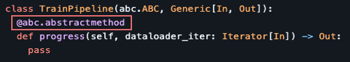
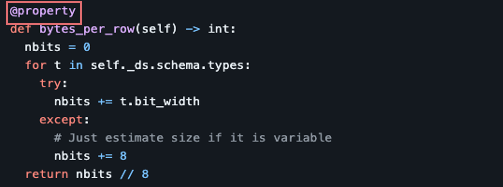
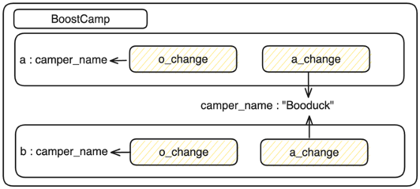

[TechTalk] 이메일에 쓰던 @가 왜 코드에 있나요?
[TechTalk] 이메일에 쓰던 @가 왜 코드에 있나요?
Boostcamp AI tech 5th에서 테크톡 스피커에 선정 되어 발표를 하게 되었을 때, 사용한 코드 및 설명입니다
코드를 먼저 작성하고 아래 해설을 적는 방식으로 글을 작성하였는데, 해설을 바로 보는 것보다 코드를 보고 유추해보고 해설을 보는 것을 추천드려요발표 영상 - https://youtu.be/rFgSqHlHZTw
01. 데코레이터를 테크톡 주제로 선정한 이유

https://github.com/twitter/the-algorithm-ml/blob/main/core/train_pipeline.py

https://github.com/twitter/the-algorithm-ml/blob/main/tools/pq.py
오픈 소스 코드를 참고하기 위해서 코드를 읽을 때, 알 수 없는 @ 문법들이 있어서, 어려움을 겪었습니다.
데코레이터 문법은 각자 맡은 기능에 따라 다르게 작동하기 때문에, 모른다면 코드 해석이 안되는 경우가 생겨서 힘들었었고, 시행착오를 겪으면서 습득한 지식들을 정리해서 공유하면 도움이 될거라 생각해서 주제로 선정하게 되었습니다.
02. @ 데코레이터의 기능
함수나 클래스의 동작을 수정하지 않고도 추가 기능을 부여
유연성은 코드의 재사용성과 유지보수성을 크게 향상
03. 기본 개념: 함수는 객체화되어있다
- 함수는 변수에 할당 가능하다:
def say_hello(): print("Hello!")
greeting = say_hello # 함수 할당
greeting() # "Hello!" 출력
## ----------------- output ----------------- ##
> Hello!
- 함수는 함수내에서 생성 가능하다:
def get_multiplier(factor):
def multiply(num):
return num * factor
return multiply
double = get_multiplier(2) # factor가 2인 multiply 함수 생성
print(double(5)) # 10 출력
## ----------------- output ----------------- ##
> 10
- 함수는 다른 함수의 인자로 전달 가능하다:
def greet(func): func() # 전달받은 함수 호출
def say_hello(): print("Hello!")
greet(say_hello) # "Hello!" 출력
## ----------------- output ----------------- ##
> Hello!
특히 마지막 “함수는 다른 함수의 인자로 전달 가능하다” 부분이 중요한데 데코레이터도 함수를 함수 인자로 활용한다고 할 수 있습니다
04. @ Decorator
def deco(f):
print('데코레이터')
return f
- 04_01 데코레이터 사용
@deco
def double(num):
return 2*num
## ----------------- output ----------------- ##
> 데코레이터
@deco가 실행되는 시점에서 deco 데코레이터 함수가 호출되고, deco 함수 내의 print(‘데코레이터’) 문장이 실행됩니다
이후 deco 함수는 인자로 전달받은 f 함수(여기서는 double 함수)를 그대로 반환합니다
따라서 출력 결과로 “데코레이터”가 출력됩니다
print(double(20))
## ----------------- output ----------------- ##
> 40
그 후 double 함수에 인자를 20으로 주고 실행하면 20을 두배 한 값인 40이 출력됩니다
- 04_02 데코레이터 사용 X
def double_(num):
return 2*num
double_ = deco(double_)
## ----------------- output ----------------- ##
> 데코레이터
데코레이터를 풀어서 설명한 코드입니다 앞의 @deco를 사용했던 코드와 같은 기능을 합니다
쉽게 말하자면 double_함수를 선언한 후에 double_ = deco(double_)을 했다고 생각하면 됩니다
print(double_(20))
## ----------------- output ----------------- ##
> 40
결과도 데코레이터를 사용한 double 함수와 같은 값을 반환합니다
- 04_03 주의할 점
def deco(f):
print('데코레이터')
return 'deco deco'
@deco
def double(num):
return 2*num
## ----------------- output ----------------- ##
> 데코레이터
print(double(20))
## ----------------- output ----------------- ##
---------------------------------------------------------------------------
TypeError Traceback (most recent call last)
Cell In[41], line 1
----> 1 print(double(20))
TypeError: 'str' object is not callable
- 타입 에러가 발생 -
deco함수의 리턴이 “deco deco” 문자열이 되면서 이제는 double 함수가 아닌 문자열 “deco deco”로 변경됨
deco 함수에서 f를 그대로 반환하지 않으면 가로채버리는 결과가 나와버린다
05. @ 데코레이터가 함수처럼 사용 된다면
- 05_01 데코레이터 사용
class lol():
def __init__(self, num):
print(f'init: {num}')
self.num = num
def __call__(self, f):
print('call')
return f
@lol(5) # @lol 데코레이터에 5를 인자로 넣어줌
def damage(n):
return 10 * n
## ----------------- output ----------------- ##
> init: 5
> call
- 05_02 데코레이터 사용 X
class lol():
def __init__(self, num):
print(f'init: {num}')
self.num = num
def __call__(self, f):
print('call')
return f
def damage(n):
return 10 * n
damage = lol(5)(damage)
## ----------------- output ----------------- ##
> init: 5
> call
아까 설명한 방식과 똑같이 @뒤에 있는 것을 함수처럼 써서 재할당을 하고 있는 것을 볼 수 있다
그래서 damage는 lol(5)(damage)로 표현이 된다
이런 표현이 자연스럽게 나타날 수 있는 문법은 class이다
클래스가 처음 선언 될때 __init__이 선언되며, 이걸 다시 함수처럼 사용을 할 때에는 __call__ 함수가 실행
그래서 같은 결과로 둘다 init, call 순서로 출력이 된다
- 05_03 데코레이터에 인자 사용 X
class lol():
def __init__(self, num):
print(f'init: {num}')
self.num = num
def __call__(self, f):
print('call')
return f
@lol
def damage(n):
return 10 * n
## ----------------- output ----------------- ##
> init: <function damage at 0x1051b84c0>
인자를 사용 안해도 코드가 작동하는 등 다양하게 활용됨
06. @staticmethod
class MathUtils:
def __init__(self, a, b):
self.a = a
self.b = b
@staticmethod
def add(a, b):
return a + b
def multiply(self):
return self.a * self.b
sum_result = MathUtils.add(3, 5)
print(sum_result)
## ----------------- output ----------------- ##
> 8
add 함수의 결과가 출력되어 3 + 5의 결과로 8이 출력
product_result = MathUtils.multiply(3, 5)
print(product_result)
## ----------------- output ----------------- ##
---------------------------------------------------------------------------
TypeError Traceback (most recent call last)
Cell In[9], line 1
----> 1 product_result = MathUtils.multiply(3, 5)
2 print(product_result)
TypeError: multiply() takes 1 positional argument but 2 were given
1개의 포지션에 2개의 값이 주어졌다며 TypeError가 발생
product_result = MathUtils.multiply(3)
print(product_result)
## ----------------- output ----------------- ##
---------------------------------------------------------------------------
AttributeError Traceback (most recent call last)
Cell In[66], line 1
----> 1 product_result = MathUtils.multiply(3)
2 print(product_result)
Cell In[55], line 11, in MathUtils.multiply(self)
10 def multiply(self):
---> 11 return self.a * self.b
AttributeError: 'int' object has no attribute 'a'
MathUtils 클래스의 multiply() 메서드를 호출할 때 인자가 부족하여 AttributeError 발생
# 클래스 인스턴스 생성
math_utils = MathUtils(3,5)
# 일반 메서드 호출
product_result = math_utils.multiply()
print(product_result)
## ----------------- output ----------------- ##
> 15
다음 코드를 실행시키려면 평소에 하던 것처럼 오른쪽과 같이 클래스 인스턴스를 생성하고 호출을 해야 된다
정적 메소드의 경우 주로 유틸리티성 함수를 위한 용도로 사용이 되며, 클래스의 속성에 변화를 일으키지 않는 함수
그러면 왜 사용하는지 의문점이 들 수 있다
이 부분에 대해서는 각자의 취향 차이이며, 클래스와 연관이 깊은 함수라고 의미를 부여하는 방법으로 사용할 수 있다
그래서 이 부분에는 협업시에 규칙을 정할 필요가 있다
07. @classmethod
class BoostCamp:
camper_name: str = "Booduck"
def o_change(self, name: str):
self.camper_name = name
@classmethod
def a_change(cls, name: str):
cls.camper_name = name
a, b = BoostCamp(), BoostCamp()
print(f"a: {a.camper_name}, b: {b.camper_name}")
## ----------------- output ----------------- ##
> a: Booduck, b: Booduck
클래스의 인스턴스인 a와 b를 생성하고 둘 다 camper_name은 초기값인 “Booduck＂인것을 확인 할 수 있다
- 07_01 “o_change” 메서드 사용 [@classmethod 선언 X]
a.o_change("DuckDuck")
print(f"a: {a.camper_name}, b: {b.camper_name}")
## ----------------- output ----------------- ##
> a: DuckDuck, b: Booduck
a의 camper_name 속성이 “DuckDuck”으로 변경되었지만, b의 camper_name 속성은 변경되지 않았다
이는 o_change 메서드가 a 인스턴스의 속성을 변경한 것이기 때문이다
클래스 변수인 camper_name은 인스턴스 간에 공유되지 않으므로 b의 camper_name은 여전히 “Booduck”으로 유지된다
- 07_02 “a_change” 메서드 사용 [@classmethod 선언]
a.a_change("DuckDuck")
print(f"a: {a.camper_name}, b: {b.camper_name}")
## ----------------- output ----------------- ##
a: DuckDuck, b: DuckDuck
a와 b의 camper_name 속성 값이 모두 “DuckDuck＂으로 변경 되었다
- 07_03 이유

일반 메소드인 o_change를 선언하면 자기 자신의 인스턴스를 가리키게 된다
@classmethod를 붙이면 첫번째 인자가 자기 자신 인스턴스가 아니라 자기자신의 소속 클래스를 가리키게 되며, 그래서 어떤 인스턴스의 classmethod에서 첫번째 인자에 접근해서 값을 수정하게 된다면 다른 인스턴스에도 영향을 끼치게 된다
08. @property
@property는 간단하게 설명하자면 함수를 변수처럼 사용하게 해준다고 생각하면 된다
class Circle:
def __init__(self, radius):
self._radius = radius
@property
def radius(self):
return self._radius
@radius.setter
def radius(self, value):
if value < 0:
raise ValueError("Radius cannot be negative")
self._radius = value
@property
def area(self):
return 3.14 * self._radius * self._radius
# 인스턴스 생성
my_circle = Circle(5)
# 속성 접근
print(f'my_circle.radius: {my_circle.radius}')
print(f'my_circle.area: {my_circle.area}')
# 속성 변경
my_circle.radius = 7
print(f'my_circle.radius: {my_circle.radius}')
print(f'my_circle.area: {my_circle.area}')
## ----------------- output ----------------- ##
> my_circle.radius: 5
> my_circle.area: 78.5
> my_circle.radius: 7
> my_circle.area: 153.86
Circle 클래스에는 radius와 area라는 두 개의 속성이 있다. radius 속성은 @property 데코레이터를 사용하여 읽기 전용으로 정의되었다
이렇게 하면 my_circle.radius와 같이 속성에 접근할 때 메서드처럼 호출되지만 실제로는 해당 속성의 값을 반환한다radius 속성에는 @radius.setter 데코레이터를 사용하여 설정 메서드를 정의
이렇게 하면 my_circle.radius = 7과 같이 속성에 값을 할당할 때 호출되는 메서드
이 설정 메서드에서는 입력된 값이 음수인지 검사하고, 음수인 경우 ValueError 예외를 발생시키며, 그렇지 않은 경우에만 속성 값을 변경한다
my_circle.area = 10
## ----------------- output ----------------- ##
---------------------------------------------------------------------------
AttributeError Traceback (most recent call last)
Cell In[35], line 1
----> 1 my_circle.area = 10
AttributeError: property 'area' of 'Circle' object has no setter
property를 사용할 때 setter를 정의하지 않으면 해당 속성은 읽기 전용이 된다
즉, 속성에 값을 할당하려고 시도하면 오류가 발생하게 된다그래서 property를 사용할 때는 해당 속성이 읽기 전용인지 또는 값을 변경할 수 있는지에 대해 정확히 구현해야 한다 정리하자면 @property를 사용하면서 setter를 정의하지 않는 경우 해당 속성은 읽기 전용이 되어 값을 변경할 수 없다
my_circle.radius = 8
*.radius는 정상 실행이 된다
09. @contextmanager
from contextlib import contextmanager
import os
@contextmanager
def file_open(file_path, mode):
# -------------- 사전 처리 -------------- #
dir_name = os.path.dirname(file_path)
if not os.path.isdir(dir_name):
os.makedirs(dir_name, exist_ok=True)
print('1: 파일 열기')
file = open(file_path, mode)
try:
print('2: 파일 객체 반환')
# ------------------------------------- #
yield file
# -------------- 사후 처리 -------------- #
finally:
file.close()
print('4: 파일 닫기')
# ------------------------------------- #
# 컨텍스트 관리자를 사용하여 파일 열기
with file_open('data/example.txt', 'w') as file:
file.write('Hello, Booduck!!')
print('3: 파일 작성')
## ----------------- output ----------------- ##
> 1: 파일 열기
> 2: 파일 객체 반환
> 3: 파일 작성
> 4: 파일 닫기
예를 들어 데이터셋 파일을 저장하는 과정에서 폴더를 지정했는데 없을 경우에는 에러가 발생한다
그럴때에는 폴더를 확인하고 없으면 생성하는 코드가 필요하며, 이러한 것들을 간단하게 해주는 것이 contextmanger이다쉽게 말하면 사전 처리와 사후 처리를 한번에 해준다고 생각하면 된다
yield를 기준으로 사전처리, 사후처리를 해준다
추가로 Yield는 return과 달리 반환을 하고 나서도 파이썬 상에서 위치를 기억하고 있다고 생각하면 쉽게 이해 할 수 잇다
그래서 사전처리 후에 with로 돌아가서 파일을 작성한후에 다시 되돌아와서 파일을 닫는 과정까지 가능하게 한다추가로 try, finally를 사용하고 있는데 그냥 에러가 발생해도 finally는 실행하고 에러를 띄우라는 뜻이다
이외에도 다양한 방식으로 사용되며, 여러 가지 케이스들은 코드를 접해가며 경험을 쌓아야된다
10. @wraps
- 10_01 @wraps(func) 사용
from functools import wraps
def logger(func):
@wraps(func) # 원본 함수의 메타데이터 유지
def wrapper(*args, **kwargs):
"""이제부터 이 함수는 wrapper입니다"""
print(f"Calling function: {func.__name__}")
result = func(*args, **kwargs)
print(f"Function {func.__name__} returned: {result}")
return result
return wrapper
@logger
def add(a, b):
"""두 수를 더하는 함수입니다."""
return a + b
# 데코레이터를 적용한 함수 호출
result = add(3, 4)
print(f"result: {result}")
# 메타데이터 유지 확인
print(f"add.__name__: {add.__name__}")
print(f"add.__doc__: {add.__doc__}")
## ----------------- output ----------------- ##
> Calling function: add
> Function add returned: 7
> result: 7
> add.__name__: add
> add.__doc__: 두 수를 더하는 함수입니다.
- 10_02 @wraps(func) 사용 X
from functools import wraps
def logger(func):
def wrapper(*args, **kwargs):
"""이제부터 이 함수는 wrapper입니다"""
print(f"Calling function: {func.__name__}")
result = func(*args, **kwargs)
print(f"Function {func.__name__} returned: {result}")
return result
return wrapper
@logger
def add(a, b):
"""두 수를 더하는 함수입니다."""
return a + b
# 데코레이터를 적용한 함수 호출
result = add(3, 4)
print(f"result: {result}")
# 메타데이터 유지 확인
print(f"add.__name__: {add.__name__}")
print(f"add.__doc__: {add.__doc__}")
## ----------------- output ----------------- ##
> Calling function: add
> Function add returned: 7
> result: 7
> add.__name__: wrapper
> add.__doc__: 이제부터 이 함수는 wrapper입니다.
- 10_03 정리
Return 해주는 함수 위에 wraps에 함수를 인자로 받아서 데코레이터로 사용하는 것은 함수의 겉껍데이(이름, doc)만 변경한다
- @wraps가 사용된 경우 -
add.__name__: add
add.__doc__: 두 수를 더하는 함수입니다.- @wraps가 없는 경우 -
add.__name__: wrapper
add.__doc__: 이제부터 이 함수는 wrapper입니다@wraps가 없는 경우 함수의 이름이 wrapper로 변경되어 있는 것을 확인할 수 있다
이렇게 되면 나중에 다른 사람이 디버깅하는 과정에서 함수의 이름을 확인할 때 파악이 힘들 수가 있다
그래서 함수 껍데기를 옮겨주겠다는 뜻인 @wrap을 설정해주면 함수의 이름을 확인할 때 편하게 확인할 수 있다
11. @abstractmethod
from abc import ABC, abstractclassmethod
class BoostCamper(ABC):
@abstractclassmethod
def track(self):
pass
@abstractclassmethod
def team_number(self):
pass
- 11_01 Try Case
시도한 케이스들을 보고 @abstractclassmethod에 파악해 보세요
- Try 01:
booduck = BoostCamper()
## ----------------- output ----------------- ##
---------------------------------------------------------------------------
TypeError Traceback (most recent call last)
Cell In[175], line 1
----> 1 booduck = BoostCamper()
TypeError: Can't instantiate abstract class BoostCamper with abstract methods team_number, track
TypeError : “추상 메서드 “team_number, track”을 사용하여 추상 클래스 “boostcamer”를 인스턴스화할 수 없습니다”
- Try 02:
class Booduck(BoostCamper):
def track(self):
print('Recsys')
duck = Booduck()
## ----------------- output ----------------- ##
---------------------------------------------------------------------------
TypeError Traceback (most recent call last)
Cell In[170], line 5
2 def track(self):
3 print('Recsys')
----> 5 duck = Booduck()
TypeError: Can't instantiate abstract class Booduck with abstract method team_number
TypeError: “추상 메서드 “team_number”를 사용하여 추상 클래스 “Booduck”을 인스턴스화할 수 없습니다”
- Try 03:
class Booduck(BoostCamper):
def track(self):
print('Recsys')
def team_number(self):
print('10')
정상적으로 선언이 된다
- 11_02 정리
예를 들어, 보통 게임 같은 것을 만들때, 캐릭터가 여러개 있을때 클래스를 여러개 만들게 된다
그때 클래스의 클래스에 구현해야 될 기능들을 모아두고 상속을 받아오면 실수를 방지 할 수 있다정리하자면 상속을 받을때 구현 해야 하는 것을 구현하지 않으면 에러를 띄워주는 기능을 한다
그래서 깃허브에서 abc.ABC를 선언하고 abstractmethod를 쓴 클래스는 직접 인스턴스로 선언되는게 아니라, 다른 클래스로 상속해주는 용도로 사용하겠다는 것이다
마치며
데코레이터 테크톡을 준비하면서, 다양한 종류의 데코레이터들을 접하고 파이썬 버전이 업그레이드 되면서 새로운 데코레이터들이 등장하는 것을 보았습니다.
하지만 “데코레이터는 다른 함수나 메서드에 추가적인 기능을 주입할 수 있게 해주는 디자인 패턴”이라는 것을 잘 이해하고 있다면, document를 통해 어떻게 작동하는 지 잘 파악할 수 있을 것이라 생각합니다.
지금 당장 다 외우지는 못해도 위의 개념만 이해하고 있다면 경험을 통해 쌓아가면 된다고 생각합니다. 감사합니다.
Reference
PEP 318 – Decorators for Functions and Methods - https://peps.python.org/pep-0318/
PEP 557 – Data Classes - https://peps.python.org/pep-0557/
PEP 698 – Override Decorator for Static Typing - https://peps.python.org/pep-0698/
PEP 3129 – Class Decorators - https://peps.python.org/pep-3129/
코딩빌런 CodingVillain - https://youtube.com/playlist?list=PL6R2CbVlhcYtnLsypcisMzDN344c1Conr
+ ChatGPT
댓글남기기